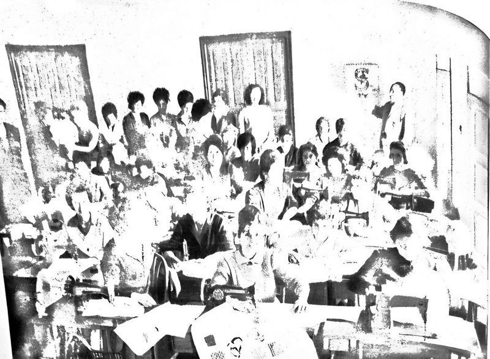

El Sindicato Agrícola y las sociedades
De 1913 a hoy, los labradores de Alaejos se han organizado en un sindicato católico, una hermandad, una cámara agraria y una junta agropecuaria. Sus actas cuentan cómo se vivía: la tienda, el chocolate propio, los pozos, las rogativas y los jornales.
En esta página (7 apartados · 10 min de lectura)
Antonio Lucas Varela leyó las actas del Sindicato Agrícola de Alaejos y de las instituciones que lo sucedieron, y de la Sociedad de Socorros Mutuos de la Virgen de la Casita, y dio un resumen en Alaejos. Una antropología cultural (2024). Esta página recoge lo que cuenta. La sociedad ilustrada del siglo XVIII, que Lucas trata en el mismo apartado, tiene página propia: La Real Sociedad Caritativo-Económica.
Por qué nacieron los sindicatos agrícolas
La ley de Sindicatos Agrícolas de 1906, de solo ocho artículos, permitió a propietarios, arrendatarios, aparceros y jornaleros asociarse para comprar juntos aperos, abonos y semillas, vender sus cosechas, hacer obras, combatir plagas, dar crédito y organizar seguros. Lo que la hizo atractiva fueron las exenciones fiscales. Lucas describe el campo de entonces: préstamos de usureros, precios en manos de caciques e intermediarios, jornadas de sol a sol, niños trabajando desde muy pequeños y casas compartidas con el burro o el cerdo.
La Iglesia aprovechó la ley, con los párrocos al frente, para crear sindicatos católicos y cajas rurales que defendieran a los pequeños labradores de la usura y frenaran a socialistas y anarquistas, siguiendo la encíclica Rerum novarum (1891). En 1913 nació la Confederación Nacional Católica Agraria de Castilla y León, y entre 1918 y 1921 cajas y sindicatos católicos sumaban en España más de 5.000 entidades y casi medio millón de socios. Con la República perdieron fuerza; tras la guerra, el nuevo régimen no aceptó la oferta de la Confederación de poner a su servicio sus estructuras y los integró en las hermandades sindicales.
De sindicato a junta agropecuaria
El 19 de octubre de 1913 Valentín Martín reunió a los labradores en el número 15 de la Plaza Mayor, casa de Pedro García, para informar de que el 6 de octubre se habían presentado en el Gobierno Civil los estatutos del sindicato que se quería fundar. Allí se eligió presidente a Enrique González Santana, presidente del consejo de vigilancia a Críspulo Santana y alguacil avisador a Genaro Monsalvo. El sindicato llevaba una tienda y una caja rural que prestaba al 6 %. Según cambiaban las leyes, fue cambiando de nombre:
- Sindicato Agrícola Alaejano (1913).
- Sindicato Agrícola Católico Alaejano (31 de mayo de 1915), con 388 socios al fundarse y 368 en 1918.
- Sindicato Alaejano de la Comunidad de Labradores (1 de junio de 1938), presidido por Inocencio Caballero Alonso.
- Junta Local de Fomento Pecuario (1938), con los presidentes Federico Galván Caballero y Felipe Pérez González (1940) y Pedro Hernández García (1944). En 1946 pasó a la Hermandad.
- Hermandad Sindical Local de Labradores y Ganaderos (17 de abril de 1943), presidida por Teónimo Viviano Mangas (1943) y Santos Buitrón Alonso (1944).
- Junta Agropecuaria Local (18 de junio de 1946), con el médico Julián Hernández Pérez, el maestro Tomás Romero Prieto y siete vocales labradores.
- Hermandad Sindical de Labradores, Ganaderos y Artesanos (14 de marzo de 1948). Ese año recibió todos los bienes del Sindicato Agrícola Católico.
- Cámara Agraria Local (7 de julio de 1971), presidida por Joaquín Alonso Lucas (1971) y Pedro Morante Fernández (1978). Las cámaras locales desaparecieron en 1997.
- Junta Agropecuaria Local (4 de agosto de 2000), presidida desde entonces por Francisco Javier Lucas Caballero, que seguía en el cargo en septiembre de 2023.
| Desde | Presidente |
|---|---|
| 19-10-1913 | Enrique González Santana |
| 01-01-1914 | Nemesio Buitrón Andrés |
| 01-03-1914 | Aurelio Hernández |
| 31-05-1915 | Nicolás Martín Alonso |
| 22-08-1920 | Pedro Morante Moyano |
| 1926 | Inocencio Santana Casado |
| 01-06-1928 | Ladislao Alonso Hernández |
| 11-05-1930 | Miguel Caballero González |
| 01-06-1932 | Andrés Lucas Buitrón |
| 01-06-1934 | Anselmo Santana Sanjuán |
| 07-01-1936 | Gregorio Lucas Caballero |
| 03-05-1936 | Zósimo Moyano Zapatero |
| 02-11-1936 | Gregorio Lucas Caballero |
| Desde | Presidente |
|---|---|
| 1948 | Gregorio Lucas |
| 1950 | Fernando Lucas González |
| 1954 | Inocencio Caballero Alonso |
| 1956 | Fernando Lucas González |
| 1957 | Antonio Santana Nieto |
| 1960 | Victorino Santana Buitrón |
| 1963 | Arturo Galván Caballero |
| 1967 | Victorino Santana Buitrón |
Los cargos eran el presidente y el presidente del jurado, elegidos cada dos años, los vocales, el secretario, el tesorero, un auxiliar, el alguacil avisador, el ordenanza, el consejo de vigilancia, los guardas de campo y un «sindicato de policía» para la vigilancia nocturna.
La casa, la tienda y los bienes
El local estaba en la calle de las Conchas: primero alquilado a Juana Martín por 200 pesetas al año, y comprado a ella el 17 de junio de 1923. Se amuebló con seis veladores y doce sillas. Allí acabó también la tienda del sindicato, que había empezado en la plaza de Hernández Morejón y vendía loza de una fábrica de Segovia, zapatillas, alpargatas, aceite, velas, sebo, esteras, azúcar, garbanzos, lentejas y un chocolate propio, hecho por un socio chocolatero. El sindicato llegó a tener caballo y motocicleta para el guarda, tractor, molino, varias paneras, báscula, una criba seleccionadora y más de 500 ovejas. En 1936 creó una caja de préstamos al 6 % y en 1946 el crédito agrícola.


Lo que deciden las actas
Una selección de los acuerdos que resume Lucas, año por año:
- 1914
- Hacer el camino vecinal a Torrecilla de la Orden, comprar un pellejo de aceite de ocho o nueve arrobas para la tienda y pedir el ferrocarril Valladolid-Tordesillas-Toro-Cubo del Vino «para remediar la crisis obrera» (véase El siglo XX).
- 1915
- Hacer una bandera morada «con el escudo de Alaejos que es una estrella plateada con cinco puntas en campo azul» (véase Escudo y bandera), y fabricar chocolate propio al precio del más vendido.
- 1916
- Fabricar velas, esteras y sebo para dar trabajo a los obreros, y aconsejar a los viñadores que sulfaten los majuelos, «porque si no no cogen vino».
- 1920-1921
- Alquilar la criba a quien la pida; comprar 192 ovejas cancinas para llegar a 592 cabezas que aprovechen rastrojeras y pampaneras; subastar 44 kilos de garbanzos de la tienda, en mal estado, por 15 pesetas.
- 1922
- Pagar 63 pesetas a Donato Guerras por hacer el chocolate y 66,30 a Emilio López por la comida que se dio a los pobres.
- 1928
- Llevar la luz a las eras, levantar un arco con dedicatoria para la visita del gobernador civil, que hizo Germán Pigazo, y pagar la fiesta de la Casita del 27 de octubre: misa, banda, pasteles, dos cántaros de vino y la propina del sacristán y del ermitaño.
- 1929
- Cada dueño de mulas lleva un carro de piedra por mula para arreglar caminos; se cede agua de los lavajos para las obras de la carretera de Valladolid; se suspende la bajada de la Virgen en rogativa porque la noche antes llovió mucho, y se dice misa solemne con refresco y música; se acuerda hacer dos pozos (véase El agua del término y los pozos) y comprar 25 trillos.
- 1930
- Vigilancia nocturna por turnos entre los labradores, por orden alfabético, y pedir el teléfono. Para entrar en la policía rural del sindicato hay que ser labrador de dos mulas y llevar 60 fanegas.
- 1932
- Diez docenas de cohetes para espantar a los grajos y arreglo de la cruz de Carrezamora.
- 1935-1938
- Rogativas a la Virgen por la sequía en 1935 y 1938, con novenario. En 1937, el entierro del guarda Félix Sandonís. En 1938, un retrato del Generalísimo, 200 pesetas para el aguinaldo del soldado y bellota para el ganado en lugar de la cebada, que faltaba.
- 1940
- Devolver la luz a las eras, que llevaban tres años sin ella.
- 1949-1952
- Sección de crédito agrícola, XII concurso de arada, nueva seleccionadora de 18.000 pesetas, báscula para carros y camiones y casa para el guarda en la calle de la Ronda. En 1952 la Junta de Fomento Pecuario divide el término en 22 polígonos de pastos, que se subastan entre los ganaderos a razón de una oveja por hectárea, para 8.800 cabezas.
- 1954-1958
- Electrificación de las eras «por aclamación», báscula de 15.000 kilos en el camino de Zamora, baño antiparasitario para las ovejas y el pozo del lavajo de las Estapias.
- 1959-1961
- 500 pesetas para los damnificados de Ribadelago; estudio del regadío con agua del Eresma o del Duero; y el reparto de cultivos el 1 de mayo de 1961: 3.771 hectáreas sembradas de secano, 3.702 de barbecho, 150 de viñedo, 50 de pradera, 1.443 de pasto con arbolado, 134 de regadío y 965 de eriales, comunes y río.
- 1966-1977
- Primeras reuniones sobre la concentración parcelaria en el cine de Bernabé Ojeda en 1966; adhesión en 1968; comisión local en 1969 (Julián Portillo del Valle, Julián Alonso García y Alfonso Escalada Hernández), que empieza a clasificar fincas el 23 de abril; coto de caza en 1972; 66 kilómetros de caminos estabilizados y 84 compactados, y entrega de parcelas en 1977.
Jornales y precios
Las cuentas dejan precios sueltos que ayudan a imaginar la vida de cada época. En 1926 el pregonero cobraba 0,50 pesetas por bando y el guarda de campo 4 pesetas al día (33 en 1959). En 1928 un cántaro de vino valía 10 pesetas, una misa solemne 50, el sermón 25, la música para una fiesta 30 y el litro de gasolina 0,58. En 1929, un taxi a la Nava 12 pesetas y un carro completo 105. En 1932, sacar agua de un pozo se pagaba a 3 pesetas el día. Y en 1959, por la siega de sesenta días laborables «y mantenido», el capataz cobraba 7.000 pesetas, el segador de hoz 6.500, el atador 5.500, el mozo de mulas de primera 7.000 y el agostero 5.500.
| Año | Producto o servicio | Precio |
|---|---|---|
| 1920 | Kilo de garbanzos | 0,75 pesetas |
| 1921 | Oveja cancina, de uno a dos años | 36 pesetas |
| 1921 | Kilo de chorizo | 1 peseta |
| 1926 | Cántaro de vino | 5 pesetas |
| 1926 | Vara de lienzo | 0,70 pesetas |
| 1928 | Cántaro de vino | 10 pesetas |
| 1928 | Kilo de pasteles | 3,50 pesetas |
| 1929 | Hoja y espiga, por hectárea | 0,80 pesetas |
| 1930 | Ciento de ladrillos | 5 pesetas |
| 1932 | Entierro y funeral | 85 pesetas |
| 1948 | Hoja y espiga, por hectárea | 22 pesetas |
| 1956 | Kilo de cebada | 3 pesetas |
| 1956 | Saco de cemento | 43 pesetas |
| 1959 | Abonar una tierra con el redil de ovejas, por noche | 16 pesetas |
Los Socorros Mutuos de la Virgen de la Casita
Las sociedades de socorros mutuos eran seguros elementales: cada socio pagaba una cuota y, si caía enfermo o se quedaba sin trabajo, recibía una ayuda. Se extendieron sobre todo tras la ley de Asociaciones de 1887. La de Alaejos, con el lema «Unos por otros y Dios por todos», se fundó antes de 1918, aunque no consta la fecha. Tuvo su sede en un local de Ladislao Guerras hasta que en 1921 se integró en el Sindicato Agrícola Católico y se trasladó a la calle de las Conchas, con la banda de música. Su médico era Nemesio Buitrón. De las actas, Lucas destaca:
- La cuota era de 60 céntimos cada cuatro semanas, y el socio enfermo cobraba 1,25 pesetas al día, 2 desde mayo de 1922.
- En junio de 1918, el año de la gripe, el médico mandó trasladar a un socio enfermo a su casa de la Argentina para que se curara mejor.
- El enfermo que cobraba no podía salir sin «papeleta de paseo», y solo a ciertas horas: en invierno de once a tres y en verano de diez a doce y de cinco a ocho. A un socio se le quitaron dos días de pensión por pasearse sin ella por las afueras, y a otro por entrar en la cantina de Nicolás Santana.
- La fiesta del patrono, san José, se celebraba un año en cada parroquia.
- En 1922 una socia honoraria, la niña María Teresa Eduarda Buitrón Ceno, regaló a la sociedad una bandera de seda pintada como la del sindicato. Se encargaron asta y enseña para el 3 de mayo y se nombró camarera a Norberta Cano Luis para cuidarla.
- En junio, julio y agosto no había sesiones, porque todos los socios eran obreros del campo y estaban en la recolección.
- Jugaban cada año cinco pesetas a la lotería de Navidad, y en 1924 dieron diez para el aguinaldo de los soldados de África, entre los que había socios e hijos del pueblo.
Fueron presidentes Baldomero Gallego (1922), Ángel Sanjuán Manjarrés (1923), Cayetano de la Calle Juárez (1924) y Mariano Sánchez Nuño (1925).
Para seguir leyendo
- Antonio Lucas Varela, Alaejos. Una antropología cultural (Alaejos, Fundación Familia Hernández Puertas, 2024), capítulo I, «Las sociedades», págs. 44-64.
- En esta web: Asociaciones y lugares de encuentro y La Real Sociedad Caritativo-Económica.
Cómo citar esta página
Amigos de Alaejos, «El Sindicato Agrícola y las sociedades», https://www.amigosdealaejos.org/historia-del-pueblo/el-sindicato-agricola-y-las-sociedades/ (revisión del 21/11/2026).